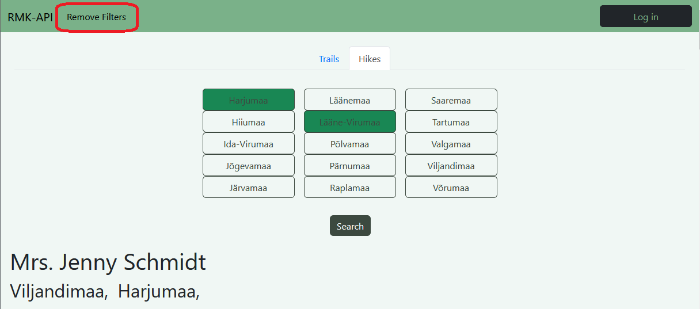

On the main page there are two tab buttons Trails and Hikes. Depending on which one is selected your search result change to either trails or hikes.
In the highlighted area of the picture is the region filtering. Clicking on any region will make it active.
When all desired regions are selected clicking the Search button will filter the search to show only hikes or trails in a certain region.
If you wish to reset the filters there should now be a button on the navbar for resetting the filters
To get more details about a single trail or hike you simply click on the trail or hike
After click on a trail or hike a modal/popup will appear with all the details. If you wish to close the modal/popup click outside the area or click on close
For user registration there is a button on the main page "Log in"
In the window there is a button for registering a user.
In the next window the user must fill all fields and then click button at the bottom. After that user creation is done.
To log into an account there is a button on the main page "Sign in" this same button will also be used to log out
In the window if the user inputs the correct credential they will be logged in when pressing the button.
To get access to the profile window you need to first be logged in.
Once logged in on the navigation bar there will be a link/button that will open the profile window
The profile window show the user their account name, email, and phonenumber
The phone number is empty by default and must be added by the user
While in the profile window there is a button "[ Change ]" next to both the email and phonenumber clicking on either one will allow you to change it
Once the user is done inputting a new email or phonenumber they can click on the button with the checkmark in it to save the changes
At the bottom of the profile window there is a red button with "Delete account" using this button requires a confirmation
To make a hike you must first click the create hike button on the navbar.
Once in the create hike window fill in all the required fields and click create
To view your hikes you must be logged in then a new tab should appear where the hikes and trails were.
To view details of a single hike follow the same steps as viewing a trail or any other hike just click on the desired hike.
To delete your hike simply select the hike you wish to delete and use the delete button at the bottom of the details window